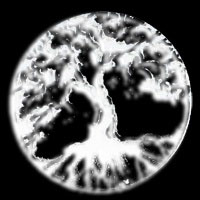

Snart dags för presentation av sista uppgiften innan faktiska sista uppgiften!
Galleriet finner man här.
Eftersom att jag i princip inte har några egna foton så tog jag mig en kvart och skrev lite fan-fiction till C.S. Lewis "Through the Looking Glass" i Alfred Korszybskis ande.
Ingenting är någonsin vad man säger att det är; det är alltid mer därtill.
2014-10-16
Är det verkligen meningen att man ska känna sådan konfundering över uppgiften så att man inte vet var man ska börja?
Jaja. Det är inte C# iaf.
2014-10-02
'Sikken vecka. Pust och stön över C#. Till skillnad från HTML och CSS så är inte C# ett fluffigt djur som gör som man vill,
utan ett skelett som man måste lägga perfekt på plats för att kanske få något livstecken ifrån det.
Jaja. Eller så kan man bara mima och ha kul i CSS och få ett resultat som Copycat.
2014-09-25
Åh, idag har varit ännu en lång dag.

Sidan gick från en svart-vit lista till en vit-svart lista. Man tycker inte att det borde vara så mycket att göra, men tänk dig själv att invertera någonting.
Att vända någonting ut och in.
Varje liten beståndsdel, varje ynka stoft av en sak ska vändas ut och in men utan att skada det.
Mja, så vore det i alla fall om vi skulle göra detta med träd eller en person, men kanske inte riktigt med kod, va?
En persons kropp, ett underverk på makroskopisk samt mikroskopisk nivå.
Något som existerar endast för att planeterna låg rätt.
Vänd ut och in på det, vettja, det går nog att göra utan att skada personen.
Nej. Men i den digitala världen så tar vi fram sågen direkt.
"Kill Your Darlings", sade någon till mig.
Det du skapat, det du lagt ned din själ i... döda det.
Bygg om dem. Gör om dem. Gör dem bättre.
Vi har kunskapen (eller?), tiden (mja...) och resurserna (känner nog att jag behöver en extra skärm eller två om jag ska fortsätta med det här)
Men gör det. Vänd ut och in på dina kärleksbarn. Förstör dem. Misslyckas med att sätta ihop dem igen.
Det är så, tydligen, så som vi lär oss programmering.
2014-09-16
Nu ska man tydligen länka till en bild skapad med Vektorbaserad grafik . Snart klar med första labben!
2014-09-16
Eftersom att de är så snälla med sin upphovsrättslicens så kommer här en trailer till filmen Big Buck Bunny i magnifika 480p.
2014-09-14
Här kommer jag att skriva lite titt som tätt allt eftersom att jag lär mig mer genom kursen.
Just nu finns inte mycket, men det kommer! Vad är ansvar, egentligen?
{kind=link}